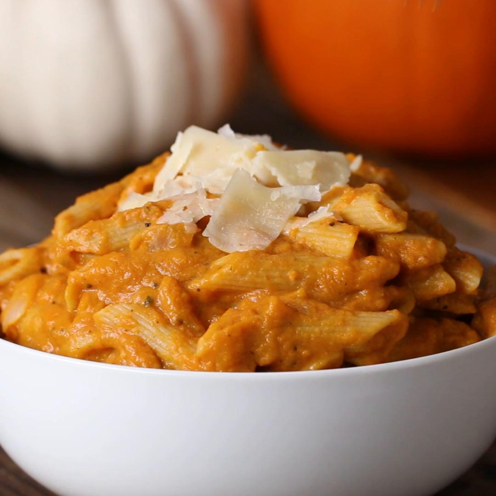

Pumpkin Sage Pasta
Description
This pasta dish combines the richness of brown butter with the earthy
flavors of pumpkin and fresh sage. It’s a perfect, quick fall meal that’s
both creamy and comforting, with a hint of nutmeg to enhance the seasonal
flavors.
Ingredients
- 12 oz pasta (pappardelle or fettuccine)
- 1 cup pumpkin puree
- 1/4 cup unsalted butter
- 6-8 fresh sage leaves
- 2 cloves garlic, minced
- 1/4 cup Parmesan cheese, grated
- Pinch of nutmeg
- Salt and pepper, to taste
Steps
-
Cook pasta according to package instructions. Drain and set aside.
-
In a large skillet, melt butter over medium heat until it begins to
brown and develop a nutty aroma.
-
Add fresh sage leaves and garlic to the butter and cook for 1-2 minutes
until fragrant.
-
Stir in pumpkin puree and a pinch of nutmeg, mixing well until smooth.
-
Toss the cooked pasta in the pumpkin sauce, adding Parmesan cheese and
seasoning with salt and pepper to taste.
-
Serve the pasta hot, garnished with extra sage leaves and Parmesan if
desired.